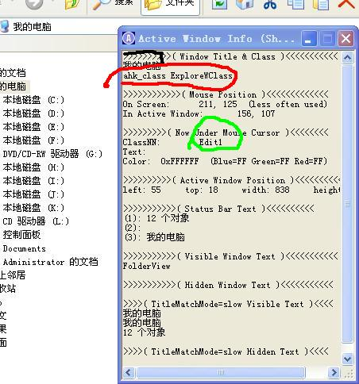

AutoHotKey 几个简单的小例子
Table of Contents
hotString 别名:
AutoHotKey 称之为hotStrings ,我叫它别名，叫缩写也可以
比如下面的几个例子
以第一个
::btw::by the way
为例 不论在什么地方，当你输入btw然后回车或空格或TAB之后，它会自动扩展为后
面的字符串by the way剩下的几个是公司几个同事的Ip地址，我访问他们的共享文件
时，只需要输入前面几个字母就可以了，而不用输入难记的IP.
::btw::by the way ::liuxjs::\\172.20.68.32 ::lihts::\\172.20.68.55 ::wanglins::\\172.20.68.51 ::wangls::\\172.20.68.51 ::kanban::http://172.20.68.243:8080
简单的键绑定
Ctrl+鼠标中键关闭窗口,
^MButton::
SendInput {Alt Down}{F4}{Alt Up}
Return
你不必把鼠标移动到窗口右上方的关闭按钮，按下鼠标后然后鼠标中键点选窗口，就会关闭当前窗口。
原理很简单，就是简单的模拟你按下Alt+F4,的操作，其实不必像上面那么复杂
^MButton::
SendInput !{F4}
Return
例如：我想让Win+Esc 关闭当前窗口：
;;我习惯于Win+Esc 关闭窗口,而不是Alt+F4 #Esc::Send !{F4}Send 和SendInput ,都是模拟用户按下键盘的函数
进行按键绑定 ,一般是“按键名称”后跟两个冒号，然后是你要进行的操作
如果只有一句，写在同一行，可以不写"return" ，否则得写return 表示到此结束。
在资源管理器中，一键显隐隐藏文件
;;;;;;;;;;;;;;;;;;;;;;;;;;;;;;;;;;;;;;;;;;;;;;;;;;;;;;;;;;;;;;;;;;;;;;;;;;;;;;
;;在资源管理器中，在隐与不隐间切换（隐藏文件）
;;主要通过修改注册表
(这一个在Xp下有用，在其他版的可能无用,这个功能网上流传的很广泛)
这里只是定义一个函数，将它与按键绑定即可。
toggle_hide_file_in_explore(){
;------------------------------------------------------------------------
; Show hidden folders and files in Windows XP
;------------------------------------------------------------------------
; User Key: [HKEY_CURRENT_USER\Software\Microsoft\Windows\CurrentVersion\Explorer\Advanced]
; Value Name: Hidden
; Data Type: REG_DWORD (DWORD Value)
; Value Data: (1 = show hidden, 2 = do not show)
RegRead, ShowHidden_Status, HKEY_CURRENT_USER, Software\Microsoft\Windows\CurrentVersion\Explorer\Advanced, Hidden
if ShowHidden_Status = 2
RegWrite, REG_DWORD, HKEY_CURRENT_USER, Software\Microsoft\Windows\CurrentVersion\Explorer\Advanced, Hidden, 1
Else
RegWrite, REG_DWORD, HKEY_CURRENT_USER, Software\Microsoft\Windows\CurrentVersion\Explorer\Advanced, Hidden, 2
WinGetClass, CabinetWClass
PostMessage, 0x111, 28931,,, A
Return
}
比如把上面的函数绑定为 Ctrl+Alt+h
^!h::toggle_hide_file_in_explore()
但是，上面有一个问题，如果当前窗口不是资源管理器，它依然会调用这个函数，虽然不会造成什么恶果，但是原本这个程序的Ctrl+alt+h 也绑定了一个功能的话，
这个功能就没法被调用到了，因为它被AutoHotKey 拦截到了。解决办法就是只在资源
管理器中启用这个键绑定。
代码如下 SetTitleMatchMode Regex ;可以使用正则表达式对标题进行匹配 #IfWinActive ahk_class ExploreWClass|CabinetWClass ^!h::toggle_hide_file_in_explore() #IfWinActive表示如果当前激活的窗口是"我的电脑"或者"我的文档"的话，就进行下面的操作。如
果不是，就不进行。#IfWinActive是一个结束标志，跟
#IfWinActive ahkclass ExploreWClass|CabinetWClass 相对应。
IfWinActive/IfWinExists 内容在这。 它是判断“符合某些条件”的“窗口”是否存有的一个
函数。它可以通过窗口标题是否含有特定的字符串，来判断。
如果你用的是英文版的Windows 的话，
IfWinExist Untitled - Notepad ^h::Send , hello #IfWinActive这段代码 当你在新打开的记事本（也就是标题正好是“Untitled - Notepad”的窗
口，不能多一个字也不能少一个字）按Ctrl+h ,的时候，会在其中插入"hello"这个单
词。依照正常人的思维，在中文系统里，相应的代码是
IfWinExist 无标题 - 记事本 ^h::Send , hello #IfWinActive但是，AutoHotKey 对中文虽然支持，但支持的并不好。比如这个地方，中文就不好用。
刚才，进行窗口标题匹配的时候，要求整个标题必须完全匹配。，也可以做到只匹配
标题的一部分，
通过这个命令SetTitleMatchMode 事先进行设置
比如:
SetTitleMatchMode 2 ; OR: SetTitleMatchMode RegEx可以有 1 2 3 Fast Slow ,RegEx ,六种值
- 1: 表示前端匹配，
- 2: 表示部分匹配
- 3: 表示完全匹配
- RegEx:表示使用正则表达式进行匹配
SetTitleMatchMode 2
IfWinExist Notepad
^h::Send , hello
#IfWinActive
这个只需要标题中含有Notepad这几个字就可以。一个窗口，除了可以用标题进行匹配之外，还可以用窗口所具有的其他属性来匹配
比如window ID ,Window Class ,进程ID. 最常用的一个就是Window Class
但是怎样知道一个窗口的window class 是什么呢? AutoHotkey 提供了一个工具
“Window Spy”,运行这个工具，然后用鼠标点选目标窗口，就会出现这个窗口的一些
可用信息。包括window class .
比如这张图是鼠标点选“我的电脑”中地址栏后 的探测结果
红色的圈起来的是“我的电脑 ”的window class .
#IfWinActive ahk_class ExploreWClass 只在"我的电脑"中起作用的代码写在这里 #IfWinActive SetTitleMatchMode Regex ;可以使用正则表达式对标题进行匹配 #IfWinActive ahk_class ExploreWClass|CabinetWClass 在"我的电脑" 有“我的文档” 中起作用的代码写在这里 #IfWinActive